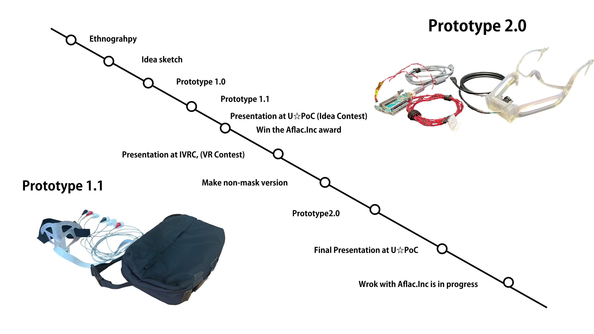
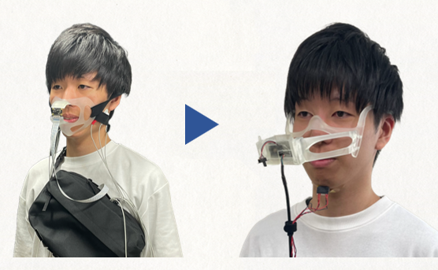
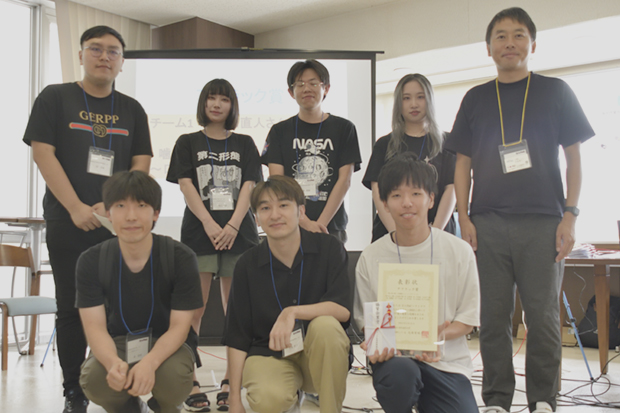
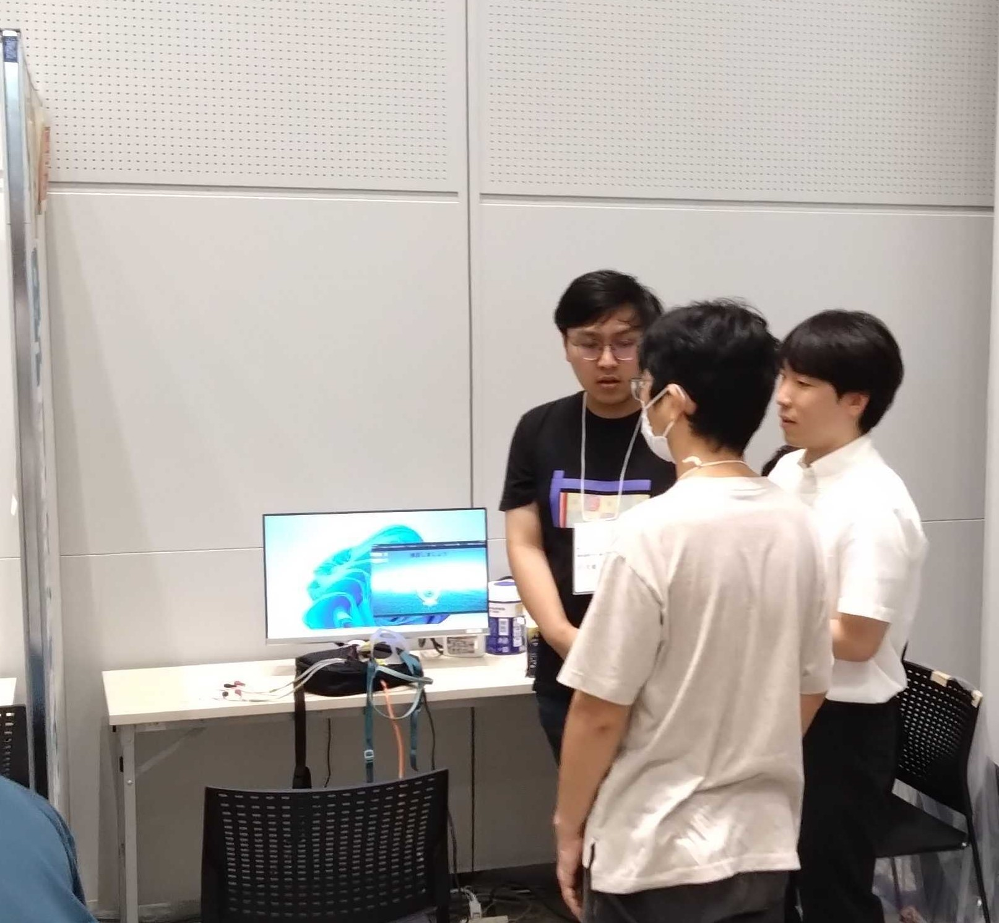

Selected project · 2023
Mask Interface
Kamihikouki turns mouth movements into game input through a mask-shaped interface.
Co-leader · Hardware · Software · Interface design

Question and concept
How can mouth movements become an engaging form of interaction? Our team explored a game in which a player controls a paper airplane using lip shapes, facial expressions, and chewing movements. The design was motivated by making oral-movement exercises more engaging through game interaction.
.jpg)
My contribution
I co-led the project and directed development of the mask and hardware, contributed to programming and interface design, and coordinated the project. The sensing interface was integrated with a game developed by teammates.
Development timeline
The project progressed from ethnography and idea sketches to wearable prototypes, public demonstrations, and a later version without the fabric mask. The original timeline below shows how these iterations developed.

Prototype
The mask uses cameras and accelerometers to capture lip shape and oral movement. We iterated on the wearable enclosure and sensing setup, then connected the detected movements to the paper-airplane game.


Exhibition and recognition
The project was exhibited at IVRC 2023 and U☆PoC (UEC Idea Demonstration Contest). The U☆PoC project received the Aflac Inc. Award.

